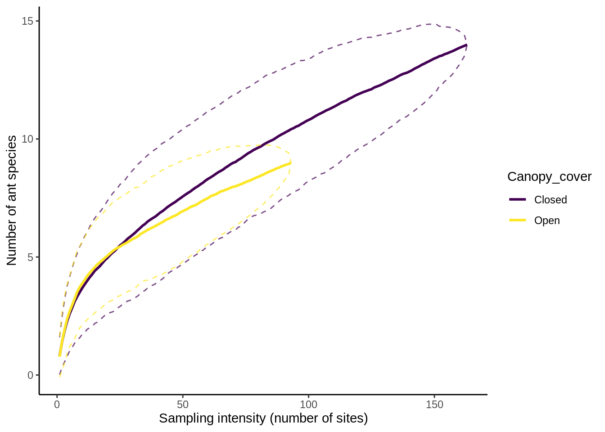

F Community ecology analyses with vegan
This appendix is a companion to the ant community ecology lab. If you haven't already, please install the vegan package with install.packages("vegan") and put the ant_data_F18.csv file in your example_data directory.
# Load packages & data
library(tidyverse)
# install.packages("vegan") # uncomment if necessary
library(vegan)
library(cowplot)
theme_set(theme_cowplot())F.1 Setting up the data
Read in the new dataset.
wide_ant_data = read_csv("example_data/ant_data_F19.csv")
View(wide_ant_data)| Habitat | Site | Canopy_cover | Ground_cover | Nearest_canopy_spp | Disturbance | Drought | Phorids | Notes | GPS_Easting | GPS_Northing | name | Acre | Total_ants | S_invicta_present | Solenopsis_invicta | Pheidole_floridana | Pheidole_tetra | Solenopsis_texana | Camponotus_texanus | Aphenogaster_texana | Brachymyermex | Crematogaster_laeviuscula | Forelius_mccooki | Forelius_pruinosis | Monomorium_minimum | Odontomachus_clarus | Paratrechina_terricola | Pheidole_bicarinata | Pheidole_dentata | Pheidole_lamia | Pheidole_metallescens | Pheidole_pelor | Pheilode_hyati | Pseudomyrmex_brunneus | Solenopsis_geminata | Atta_texana | Camponotus_sansabeaneus | Pachycondyla_harpax | Other_species |
|---|---|---|---|---|---|---|---|---|---|---|---|---|---|---|---|---|---|---|---|---|---|---|---|---|---|---|---|---|---|---|---|---|---|---|---|---|---|---|---|
| R | 1 | 3 | 0 | American Elm | high | 1 | 1 | NA | 105 | 815 | student_1 | 52 | 250 | 1 | 250 | 0 | 0 | 0 | 0 | 0 | 0 | 0 | 0 | 0 | 0 | 0 | 0 | 0 | 0 | 0 | 0 | 0 | 0 | 0 | 0 | 0 | 0 | 0 | 0 |
| R | 2 | 3 | 1 | pecan | high | 0 | 0 | yellow jackets | 96 | 826 | student_1 | 52 | 5 | 0 | 0 | 5 | 0 | 0 | 0 | 0 | 0 | 0 | 0 | 0 | 0 | 0 | 0 | 0 | 0 | 0 | 0 | 0 | 0 | 0 | 0 | 0 | 0 | 0 | 0 |
| R | 3 | 2 | 0 | hackberry | high | 1 | 0 | yellow jackets | 86 | 848 | student_1 | 52 | 5 | 0 | 0 | 0 | 5 | 0 | 0 | 0 | 0 | 0 | 0 | 0 | 0 | 0 | 0 | 0 | 0 | 0 | 0 | 0 | 0 | 0 | 0 | 0 | 0 | 0 | 0 |
| R | 4 | 2 | 0 | pecan | high | 1 | 1 | yellow jackets | 76 | 848 | student_1 | 52 | 10 | 0 | 0 | 0 | 10 | 0 | 0 | 0 | 0 | 0 | 0 | 0 | 0 | 0 | 0 | 0 | 0 | 0 | 0 | 0 | 0 | 0 | 0 | 0 | 0 | 0 | 0 |
| R | 5 | 3 | 1 | pecan | low | 1 | 1 | NA | 87 | 862 | student_1 | 52 | 62 | 1 | 62 | 0 | 0 | 0 | 0 | 0 | 0 | 0 | 0 | 0 | 0 | 0 | 0 | 0 | 0 | 0 | 0 | 0 | 0 | 0 | 0 | 0 | 0 | 0 | 0 |
| R | 6 | 1 | 3 | pecan | high | 0 | 1 | NA | 104 | 842 | student_1 | 52 | 20 | 0 | 0 | 0 | 5 | 15 | 0 | 0 | 0 | 0 | 0 | 0 | 0 | 0 | 0 | 0 | 0 | 0 | 0 | 0 | 0 | 0 | 0 | 0 | 0 | 0 | 0 |
| R | 7 | 0 | 2 | pecan | high | 2 | 0 | NA | 109 | 836 | student_1 | 52 | 175 | 1 | 175 | 0 | 0 | 0 | 0 | 0 | 0 | 0 | 0 | 0 | 0 | 0 | 0 | 0 | 0 | 0 | 0 | 0 | 0 | 0 | 0 | 0 | 0 | 0 | 0 |
| R | 8 | 3 | 0 | hackberry | high | 1 | 0 | NA | 97 | 858 | student_1 | 52 | 350 | 1 | 350 | 0 | 0 | 0 | 0 | 0 | 0 | 0 | 0 | 0 | 0 | 0 | 0 | 0 | 0 | 0 | 0 | 0 | 0 | 0 | 0 | 0 | 0 | 0 | 0 |
| R | 9 | 3 | 0 | hackberry | high | 1 | 0 | flies | 107 | 859 | student_1 | 52 | 31 | 0 | 0 | 30 | 0 | 0 | 1 | 0 | 0 | 0 | 0 | 0 | 0 | 0 | 0 | 0 | 0 | 0 | 0 | 0 | 0 | 0 | 0 | 0 | 0 | 0 | 0 |
| R | 10 | 3 | 0 | pecan | high | 1 | 1 | NA | 108 | 877 | student_1 | 52 | 200 | 1 | 200 | 0 | 0 | 0 | 0 | 0 | 0 | 0 | 0 | 0 | 0 | 0 | 0 | 0 | 0 | 0 | 0 | 0 | 0 | 0 | 0 | 0 | 0 | 0 | 0 |
Looking at the dataset, there's a bunch of columns that indicate the number of species present. Let's make a tidy version of this dataset, which will be easier to work with for some of the functions we're using. We'll be using the pivot_longer() function from the tidyr package.
tidy_ant_data = wide_ant_data %>%
pivot_longer(cols = Solenopsis_invicta:Other_species, # These are the species columns
names_to = "Species", # Put the column name in a "Species" column
values_to = "N") %>% # Cell values are counts, so make that an N column
# replace the underscores in species names with a space:
mutate(Species = str_replace(Species, "_", " ")) %>% # str_replace is in the stringr package, which is part of tidyverse
filter(N > 0) # Remove species that aren't present
View(tidy_ant_data)| Habitat | Site | Canopy_cover | Ground_cover | Nearest_canopy_spp | Disturbance | Drought | Phorids | Notes | GPS_Easting | GPS_Northing | name | Acre | Total_ants | S_invicta_present | Species | N |
|---|---|---|---|---|---|---|---|---|---|---|---|---|---|---|---|---|
| R | 1 | 3 | 0 | American Elm | high | 1 | 1 | NA | 105 | 815 | student_1 | 52 | 250 | 1 | Solenopsis invicta | 250 |
| R | 2 | 3 | 1 | pecan | high | 0 | 0 | yellow jackets | 96 | 826 | student_1 | 52 | 5 | 0 | Pheidole floridana | 5 |
| R | 3 | 2 | 0 | hackberry | high | 1 | 0 | yellow jackets | 86 | 848 | student_1 | 52 | 5 | 0 | Pheidole tetra | 5 |
| R | 4 | 2 | 0 | pecan | high | 1 | 1 | yellow jackets | 76 | 848 | student_1 | 52 | 10 | 0 | Pheidole tetra | 10 |
| R | 5 | 3 | 1 | pecan | low | 1 | 1 | NA | 87 | 862 | student_1 | 52 | 62 | 1 | Solenopsis invicta | 62 |
| R | 6 | 1 | 3 | pecan | high | 0 | 1 | NA | 104 | 842 | student_1 | 52 | 20 | 0 | Pheidole tetra | 5 |
| R | 6 | 1 | 3 | pecan | high | 0 | 1 | NA | 104 | 842 | student_1 | 52 | 20 | 0 | Solenopsis texana | 15 |
| R | 7 | 0 | 2 | pecan | high | 2 | 0 | NA | 109 | 836 | student_1 | 52 | 175 | 1 | Solenopsis invicta | 175 |
| R | 8 | 3 | 0 | hackberry | high | 1 | 0 | NA | 97 | 858 | student_1 | 52 | 350 | 1 | Solenopsis invicta | 350 |
| R | 9 | 3 | 0 | hackberry | high | 1 | 0 | flies | 107 | 859 | student_1 | 52 | 31 | 0 | Pheidole floridana | 30 |
F.2 Jaccard similarity
To calculate the Jaccard similarity of two communities, you need to divide the number of shared species by the total number of species. This can be done with a combination of the intersect(), union(), and length() functions.
# Let's say these are the species in our two communities:
com_a = LETTERS[1:5]
com_b = LETTERS[3:8]
print(com_a); print(com_b)
## [1] "A" "B" "C" "D" "E"
## [1] "C" "D" "E" "F" "G" "H"
# Species in common:
intersect(com_a, com_b)
## [1] "C" "D" "E"
# Species present in either:
union(com_a, com_b)
## [1] "A" "B" "C" "D" "E" "F" "G" "H"
# Total number of species present:
length(union(com_a, com_b))
## [1] 8
# Jaccard similarity:
length(intersect(com_a, com_b)) /
length(union(com_a, com_b))
## [1] 0.375Since you'll be doing this for several groups, it's a good idea to write a function that will do this for us.
jaccard_similarity = function(com_1, com_2) {
# com_1 and com_2 are the arguments of the function,
# they should be the names in different communities
# Create local variables for the intersection and union;
common_spp = intersect(com_1, com_2)
total_spp = union(com_1, com_2)
# these variables are created while the function runs & destroyed when it ends
# The last value of the function is its output (a.k.a., return value)
length(common_spp) / length(total_spp) # return this
}
jaccard_similarity(com_1 = com_a, com_2 = com_b)
## [1] 0.375How would we make this work with the dataset? Here's one possibility:
# Define the community comparison as disturbed river terrace vs undisturbed river terrace
com_r_lo = tidy_ant_data %>%
# Subset the data to get the "community" you want
filter(Habitat == "R", Disturbance == "low") %>%
# Get the list of species as a vector
pull(Species) %>% unique()
com_r_hi = tidy_ant_data %>%
filter(Habitat == "R", Disturbance == "high") %>%
pull(Species) %>% unique()
com_r_lo
## [1] "Solenopsis invicta" "Pheidole floridana" "Pheidole tetra"
## [4] "Pheidole pelor" "Pheidole dentata" "Other species"
com_r_hi
## [1] "Solenopsis invicta" "Pheidole floridana" "Pheidole tetra"
## [4] "Solenopsis texana" "Camponotus texanus" "Pheidole dentata"
## [7] "Pheidole bicarinata" "Other species"
jaccard_similarity(com_r_lo, com_r_hi)
## [1] 0.5555556There are more elegant & efficient ways to do this, but they rely on some R techniques we haven't talked about yet; I'll be updating this chapter once I get the appropriate information into the book.
F.3 Species Accumulation Curves
Species accumulation curves are calculated by the specaccum() function in vegan. This function requires a data set where each column is a species, each_row is a site, and each cell is a 1 (indicating presence) or 0 (indicating absence). Let's create a function that will format the data for this:
# Create a function that converts a number to presence-absense
to_presence_absense = function(x) if_else(x > 0, 1, 0)
# Format data for the species accumulation curve
format_sac_data = function(wide_data) {
wide_data %>%
# Select only species columns
select(Solenopsis_invicta:Other_species) %>%
# We don't want to include this "other species"
select(-Other_species) %>%
# use to_presence_absense() on all columns
mutate(across(everything(), to_presence_absense))
}
# Test it on quarry data:
wide_ant_data %>%
filter(Habitat == "Q") %>%
format_sac_data() %>%
View()| Solenopsis_invicta | Pheidole_floridana | Pheidole_tetra | Solenopsis_texana | Camponotus_texanus | Aphenogaster_texana | Brachymyermex | Crematogaster_laeviuscula | Forelius_mccooki | Forelius_pruinosis | Monomorium_minimum | Odontomachus_clarus | Paratrechina_terricola | Pheidole_bicarinata | Pheidole_dentata | Pheidole_lamia | Pheidole_metallescens | Pheidole_pelor | Pheilode_hyati | Pseudomyrmex_brunneus | Solenopsis_geminata | Atta_texana | Camponotus_sansabeaneus | Pachycondyla_harpax |
|---|---|---|---|---|---|---|---|---|---|---|---|---|---|---|---|---|---|---|---|---|---|---|---|
| 1 | 0 | 0 | 0 | 0 | 0 | 0 | 0 | 0 | 0 | 0 | 0 | 0 | 0 | 0 | 0 | 0 | 0 | 0 | 0 | 0 | 0 | 0 | 0 |
| 1 | 0 | 0 | 0 | 0 | 0 | 0 | 0 | 0 | 0 | 0 | 0 | 0 | 0 | 0 | 0 | 0 | 0 | 0 | 0 | 0 | 0 | 0 | 0 |
| 0 | 0 | 0 | 0 | 0 | 0 | 0 | 0 | 0 | 0 | 0 | 0 | 0 | 0 | 0 | 0 | 0 | 0 | 0 | 0 | 0 | 0 | 0 | 0 |
| 1 | 0 | 0 | 0 | 0 | 0 | 0 | 0 | 0 | 0 | 0 | 0 | 0 | 0 | 0 | 0 | 0 | 0 | 0 | 0 | 0 | 0 | 0 | 0 |
| 0 | 0 | 0 | 0 | 0 | 0 | 0 | 0 | 0 | 0 | 0 | 0 | 0 | 0 | 0 | 0 | 0 | 0 | 0 | 0 | 0 | 0 | 0 | 0 |
| 0 | 1 | 0 | 0 | 0 | 0 | 0 | 0 | 0 | 0 | 0 | 0 | 0 | 0 | 0 | 0 | 0 | 0 | 0 | 0 | 0 | 0 | 0 | 0 |
| 0 | 1 | 0 | 0 | 0 | 0 | 0 | 0 | 0 | 0 | 0 | 0 | 0 | 0 | 0 | 0 | 0 | 0 | 0 | 0 | 0 | 0 | 0 | 0 |
| 0 | 0 | 0 | 0 | 0 | 0 | 0 | 0 | 0 | 0 | 0 | 0 | 0 | 0 | 1 | 0 | 0 | 0 | 0 | 0 | 0 | 0 | 0 | 0 |
| 0 | 0 | 1 | 0 | 0 | 0 | 0 | 0 | 0 | 0 | 0 | 0 | 0 | 0 | 0 | 0 | 0 | 0 | 0 | 0 | 0 | 0 | 0 | 0 |
| 0 | 1 | 0 | 0 | 0 | 0 | 0 | 0 | 0 | 0 | 0 | 0 | 0 | 0 | 0 | 0 | 0 | 0 | 0 | 0 | 0 | 0 | 0 | 0 |
From here, you can
sac_r = wide_ant_data %>%
filter(Habitat == "R") %>%
format_sac_data() %>%
specaccum(method = "random", permutations = 500) # Use these argument optionsUse print(sac_r) to look at the output. The results are basically a tidy data frame turned on its side: one row for the number of sites sampled, one for the estimated richness, and one for the error around the richness estimate. To plot this, we need to re-format the output.
sac_r_tidy =
tibble(
sites = sac_r$sites,
richness = sac_r$richness,
se = sac_r$sd # the "SD" column is actually a standard error measure
)
View(sac_r_tidy)| sites | richness | se |
|---|---|---|
| 1 | 0.950 | 0.3517776 |
| 2 | 1.710 | 0.5643909 |
| 3 | 2.328 | 0.7466800 |
| 4 | 2.800 | 0.8817909 |
| 5 | 3.200 | 0.9411544 |
| 6 | 3.536 | 0.9872453 |
| 7 | 3.842 | 0.9975099 |
| 8 | 4.108 | 1.0170569 |
| 9 | 4.336 | 1.0065437 |
| 10 | 4.584 | 1.0024739 |
From this, it's relatively simple to create the actual plot:
sac_r_plot = sac_r_tidy %>%
# Define the confidence intervals based on mean richness & standard errors
mutate(lower_ci = richness - se * 1.96,
upper_ci = richness + se * 1.96) %>%
ggplot() + aes(x = sites, y = richness) +
geom_line(size = 1) + # line for richness
# The lines below add in confidence intervals
geom_line(aes(y = lower_ci), linetype = 2, alpha = .7) +
geom_line(aes(y = upper_ci), linetype = 2, alpha = .7) +
# alpha adds a bit of transparency
xlab("Sampling intensity (number of sites)") +
ylab("Number of ant species")
sac_r_plot Let's combine these last few steps into a pair of functions, for re-use with different data sub-sets:
Let's combine these last few steps into a pair of functions, for re-use with different data sub-sets:
get_sac = function(wide_data) {
# wide_data is data in the wide format, probably subset or filtered
sac = format_sac_data(wide_data) %>% # Convert to SAC format
specaccum(method = "random", permutations = 500) # calculate SAC
tibble( # Tidy output
sites = sac$sites,
richness = sac$richness,
se = sac$sd
) %>%
mutate(lower_ci = richness - se * 1.96,
upper_ci = richness + se * 1.96)
}
plot_sac = function(sac_data) {
# sac_data is the output of get_sac()
sac_data %>% ggplot() +
aes(x = sites, y = richness) +
geom_line(size = 1) + # line for richness
# The lines below add in confidence intervals
geom_line(aes(y = lower_ci), linetype = 2, alpha = .7) +
geom_line(aes(y = upper_ci), linetype = 2, alpha = .7) +
# alpha adds a bit of transparency
xlab("Sampling intensity (number of sites)") +
ylab("Number of ant species")
}From here, we easily try different combinations
wide_ant_data %>%
filter(Habitat == "P") %>%
get_sac() %>%
plot_sac()
When comparing multiple groups, it's best to put them together in a single plot. The easiest way to do that is to calculate the SAC data, then combine the resulting data frames
# Create the SAC data frames for each group in your comparison
sac_dist_hi = wide_ant_data %>%
filter(Disturbance == "high") %>%
get_sac() %>%
mutate(Disturbance = "high") # Use the Mutate Add disturbance column to sac results
sac_dist_low = wide_ant_data %>%
filter(Disturbance == "low") %>%
get_sac() %>%
mutate(Disturbance = "low") # Add disturbance column back to sac results
sac_dist_combined = # Combine them into one data frame
bind_rows(sac_dist_hi, sac_dist_low) # Note that bind_rows() can combine more than two data frames, if you're doing a 3+ part comparison
plot_sac(sac_dist_combined) + # Creates a standard SAC Plot
aes(color=Disturbance) + # Separates out the lines by color based on the Disturbance column
scale_color_viridis_d() # Make the colors look nice
F.4 Rank Abundance Curves
This is really just an exercise in data manipulation: we want to get the total number of individuals of each species, then display them in decreasing frequency. You need to summarize your data frame so that there's one row per species, with columns Species and N (which is the species-level sum of the already existing N column in tidy_ant_data). I'm not providing the code for this; you should be able to piece it together from the dplyr and/or ggplot appendices. I would recommend creating a function that does the work, so that you can reuse it.
To make the plot itself, you can use this function:
plot_rank_abundance = function(summarized_data, right_margin = 2.8) {
# Make the rank abundance plot
# The right_margin argument is used to make sure that
# the angled axis labels don't go of the page
# make it larger or smaller to suit your tastes
ggplot(summarized_data, aes(x = Species, y = N)) +
geom_line(group = 1) + # Create a descending line
scale_y_log10() + # puts y axis on log scale
theme(axis.text.x = # cleans up appearance of x axis labels
element_text(angle = -20, hjust = 0.05, # angled, justified text
vjust = 1, face = "italic"), # also in italics
# makes sure that the axis labels don't go off the page
plot.margin = unit(c(0,right_margin,0,0)+.1, "cm"))
# Be sure sure that Species has been coded as a factor, in decreasing order of N!
}Your resulting plot should look something like this:

F.5 Shannon Index & Diversity
Let's make a function that calculates the Shannon index of a community:
shannon_diversity = function(species, count) {
# species: vector of species names;
# count: how many of each species are present
# Create p, a vector of relative frequencies
p = tibble(species, count) %>%
# Merge duplicate species
group_by(species) %>%
summarize(count = sum(count)) %>%
ungroup() %>%
# Remove zeroes
filter(count > 0) %>%
# Convert to frequencies
mutate(p = count / sum(count)) %>%
# Extract column p
pull(p)
if(length(p) < 2) return(0) # one or 0 species has an H of 0
exp( -sum(p * log(p)) ) # exponential of shannon index
}
# Calculate the shannon diversity
shannon_diversity(LETTERS[1:5], # Species names, A : E
c(100, 5, 30, 22, 140)) # Species counts
## [1] 3.367463This function should work well with a grouped summarize function:
tidy_ant_data %>%
group_by(Acre, Habitat) %>% # group by Acre & habitat
summarize(shannon = shannon_diversity(Species, N)) %>%
View()
## `summarise()` has grouped output by 'Acre'. You can override using the `.groups` argument.| Acre | Habitat | shannon |
|---|---|---|
| 1 | P | 3.205639 |
| 4 | P | 3.485273 |
| 9 | Q | 3.552628 |
| 10 | P | 2.924111 |
| 13 | P | 1.894624 |
| 14 | P | 1.825931 |
| 15 | P | 3.726142 |
| 19 | P | 2.769997 |
| 20 | P | 2.017839 |
| 34 | NA | 3.359807 |